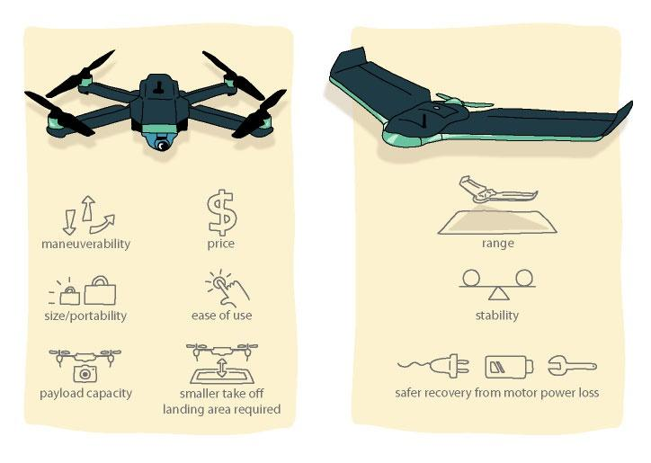
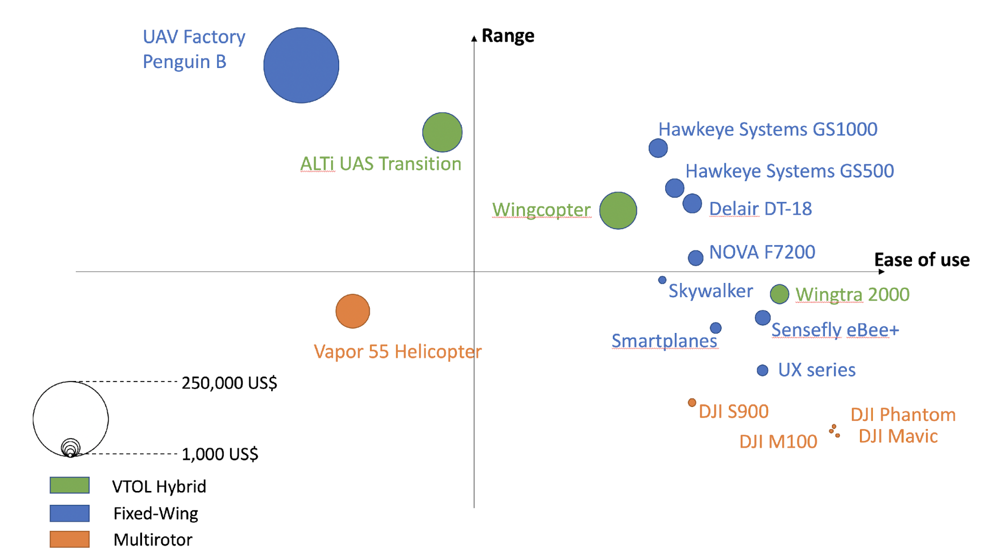

5. Choosing the Right UAV Platform
Download page as PDFIf a UAV is the right tool, the next decision concerns which platform to use. There are multiple factors to consider in making this choice: the purpose of the data capture, the weight of platform allowed by local regulations under the conditions of the intended survey location, the need for weatherproofing, and the project’s technical requirements (e.g., the type of sensor/camera needed for the survey).
The choice of platform has a number of consequences:
- It affects the area that can be surveyed (because different platforms fly at different altitudes and have different ranges).
- It affects the potential downtime of the survey (because some platforms are more weatherproof than others);
- It affects the areas where it can be operated (specifically the landing and takeoff areas);
- It affects the spatial resolution of the data, which can be adjusted using various sensors, lenses or by adjusting flight altitude above ground level.
The ultimate choice of platform (fixed-wing, rotary wing, or hybrid, size; propulsion system; etc.) really depends on one question: which platform can carry the sensor necessary to collect the data required (that is, data of the desired coverage, resolution, and type)? To ensure that the platform can perform as needed under the given conditions, any decision must be based on thorough research. The remainder of the chapter discusses key considerations in deciding which UAV platform to use, including the type of sensor (camera) needed for the survey.
Figure 3. Advantages of rotary (left) and fixed-wing (right) small UAVs.

_Source: _ PacDID. 2017
In deciding on a UAV for mapping, a major consideration is whether to use a rotary or fixed-wing platform.** Figure 3 **compares the advantages of the two. Rotary UAVs (multi-rotor drones1) are popular and relatively cheap for mapping; this category includes quadcopters (drones with four propellers) that can be carried in a backpack-size case. Their portability, price, and ease of use make them the obvious choice for those starting out in UAV mapping on very small survey sites. One downside of using small rotary multicopters is their limited flight time, which is on average a maximum of 30 minutes, covering an area less than 0.5 km2 per flight. Small fixed-wing UAVs can usually fly longer by taking advantage of their gliding capability, and they fly significantly longer distances than rotary UAVs. A relatively new type of platform is the hybrid UAV combining both rotors and fixed wings. This design allows the UAV to take off and land vertically and make use of wings for extended range. Table 3 compares some popular portable UAVs for mapping.
Table 9. Comparison of Popular UAVs for Mapping
| UAV model | Type | Endurance | MTOW (kg) | Range (km2)a | Cost (US$) | Wind resistance (m/s)b |
|---|---|---|---|---|---|---|
| DJI Mavic Pro | Rotary | 20 minutes | 0.7 | 0.3 | 1,000 | 10.0 |
| DJI Phantom Pro 3 | Rotary | 23 minutes | 1.4 | 0.4 | 1,500 | 10.0 |
| DJI S 900 | Rotary | 18 minutes | 8.2 | 0.3 | 1,200 | 10.0 |
| DJI Matrice 100 | Rotary | 23–40 minutesc | 3.6 | 0.6 | 3,300 | 10.0 |
| SenseFly eBee Classic | Fixed-wing | 50 minutes | 0.7 | 1.5 | 15,000 | 12.0 |
| SenseFly eBee X | Fixed-wing | 90 minutesd | 1.5 | 5 | 17,000 | 12.8 |
| Delair DT18 | Fixed-wing | 120 minutes | 2 | 20 | 30,000 | 13.8 |
| WingtraOne | Hybrid | 55 minutes | 4.5 | 10 | 20,000 | 12.0 |
| Alti UAS Transition | Hybrid | 12 hours | 16 | 45 | 105,000e | 13 |
| UAV Factory Penguin B | Fixed-wing | 20 hours | 21.5 | 36 | 100,000 | Unknown |
| V-TOL Goshawk III Surveyor | Fixed-wing | 150 minutes | 5 | 20 | 38,000 | 12 |
| Wingcopter 178 | Hybrid | 90 minutes | 15 | 5 | 80,000 | 15 |
Note: MTOW = maximum takeoff weight.
a. Where specs were unavailable, this number was calculated from the combination of maximum speed and endurance values.
b. These are claimed levels, but actual levels are likely lower for quality image acquisition.
c. Time depends on battery configuration.
d. Time indicates the endurance when the endurance extension is used.
e. Value includes Real-Time Kinematic/ Post-Processed Kinematic positioning capability.
Source: Information on UAVs compiled form manufacturers’ materials
Other issues to consider when deciding on a UAV for mapping include the following:
- What is the area of the average site to be surveyed? If the area is larger than 1 km2 (~0.4 square mile), a fixed-wing UAV is preferred. Rotary multicopter UAVs could be used for mapping larger sites, but they require several flights and good ground access in order to take off and land within each flight distance range.
- What is the typical terrain type around the survey site? Rugged terrain and obstacles on the ground may not allow the use of fixed-wing UAVs, which normally require open spaces (e.g., soccer fields) for takeoff and landing maneuvers. A fixed-wing hybrid with vertical takeoff and landing capabilities would be preferred in this case.
- What is the budget available? Typically, small rotary quadcopter UAVs are cheaper than fixed-wing or hybrid models. They also may require less advanced piloting skills.
- What type of data needs to be collected? The most basic onboard imaging sensors are small optical digital cameras. These allow capturing images in the visible spectrum range for producing typical red-green-blue (RGB) orthomosaics. Other sensors such as LiDAR and multispectral cameras can range greatly in size and may be used on board larger UAVs for collecting other types of data.
In the context of small islands, or to cover areas of 10 km2 and more, a high-endurance multirotor, a fixed-wing or a hybrid platform with these characteristics is recommended:
Proven reliability,2 for instance as measured in flight hours. When in doubt, inquiries regarding reliability in the setting of its intended use should be made towards the manufacturer before purchasing the platform.
Foam construction or easily replaceable parts for ease of repair can be helpful in maintaining the craft over the long term. Alternatively, craft that can be serviced close to the location of their use should be preferred.
Total weight of more than 1.5 kg** **with a profile that will handle wind and weather conditions on small islands will minimize necessary downtime due to inclement weather. Yet keeping in mind that few to no battery-powered UAVs on the market in early 2019 are rain-proof, the technology is evolving quickly.3Wind resistance should be 10m/s or higher when possible.
In addition, a platform with a flight time longer than 45 minutes is preferable in order to minimize landings, the part of the flight when damage to the platform is most likely to happen.
Reliable and trialed UAV systems that have streamlined workflows are best suited to high-stress situations such as following disasters.
Figure 4_ _shows the various UAV platforms available on the market, plotted according to the range, price, and ease of use. If budget is not an issue, use of several platforms could be considered according to the objectives and nature of the survey, where the user would select the optimal platform for the different objectives. Small multi-rotor UAVs will be useful when quick deployments for aerial images over small areas are needed. Large fixed-wing UAVs lend themselves to large- area mapping.

Figure 4. Price, range, and ease-of-use comparison of various UAV platforms available on the market.
Source: Based on experience from the UAV4Resilience Challenge, aerial surveys after cyclone Gita in Tonga, and informational interviews with professionals and manufacturers_. _
Note: VTOL = Vertical Takeoff and Landing.
- The words Drones and UAV can be used interchangeably. [return]
Choosing a system that has been in use for many years and has a good track record—rather than a prototype or new system—is recommended.
[return]Heavy platforms are not recommended for new or inexperienced pilots due to the higher risk these platforms present.
[return]